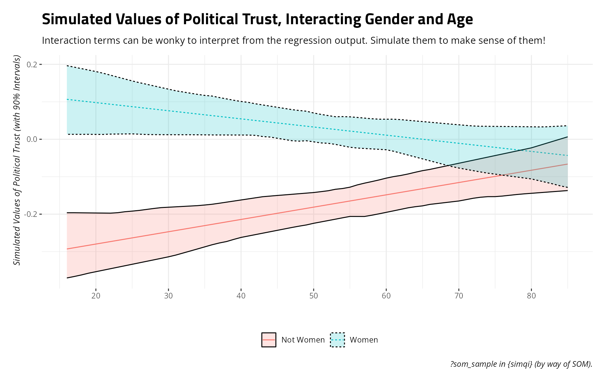
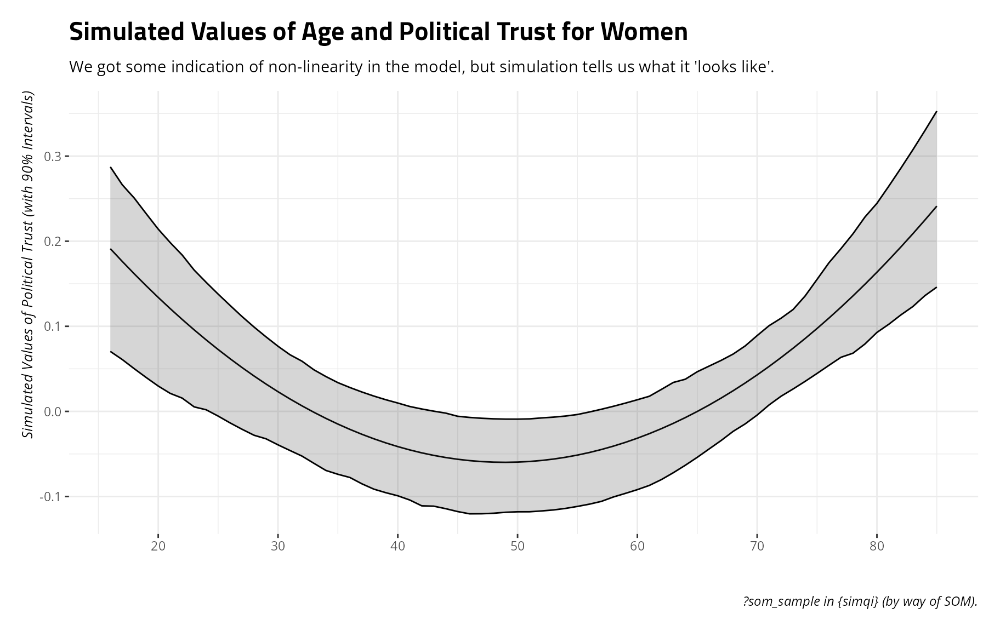

Simulating Quantities of Interest in a Linear Model
linear-model.Rmd
library(tidyverse)
library(stevemisc)
library(modelr)
library(simqi)
library(stevethemes)
set.seed(8675309) # Jenny, I got your number...A (Brief) Description of the Data
som_sample is a subset of the SOM
surveys in Sweden. It is the Swedish corollary to the General Social
Survey in the United States and offers a wide-reaching assessment of
Swedish public opinion about various aspects of society, politics, and
mass media. Deep knowledge about Sweden is not required for this
tutorial though some kind of comfort with modeling public opinion data
is assumed.
som_sample
#> # A tibble: 2,841 × 14
#> year idnr lan lptrust satisdem trust_rf attitude_eu age female edu3
#> <dbl> <dbl> <chr> <dbl> <dbl> <dbl> <dbl> <dbl> <dbl> <dbl>
#> 1 2019 10003 Dalarna… 1.08 3 4 4 58 0 3
#> 2 2019 10004 Halland… -0.296 3 3 3 76 1 1
#> 3 2019 10005 Örebro … -0.343 2 2 4 66 0 3
#> 4 2019 10007 Västman… 0.512 4 3 4 62 0 2
#> 5 2019 10008 Stockho… 1.08 4 4 4 46 1 2
#> 6 2019 10009 Dalarna… -2.08 1 1 1 24 0 2
#> 7 2019 10011 Västman… 0.346 3 3 3 69 0 2
#> 8 2019 10012 Söderma… -2.08 1 5 2 85 0 3
#> 9 2019 10013 Västra … -0.106 3 3 3 68 1 2
#> 10 2019 10014 Östergö… 1.08 3 2 4 31 1 2
#> # ℹ 2,831 more rows
#> # ℹ 4 more variables: ideo <dbl>, hinc <dbl>, resarea <dbl>, interestp <dbl>A Simple Linear Model with No Frills
Let’s run a simple linear model regressing a respondent’s latent
political trust (lptrust) on their age (age,
in years), whether they self-identify as a woman or not
(female), and their educational attainment
(edu3) into “low” (1), “medium” (2), or “high” (3)
categories. The
codebook offers more information about how the political trust
variable is created. Understand, for now, that higher values in
lptrust = “more” political trust and the variable
approximates a standard normal distribution.
Let’s use the lm() to regress political trust on those
three things.
M1 <- lm(lptrust ~ age + female + edu3, som_sample)
summary(M1)
#>
#> Call:
#> lm(formula = lptrust ~ age + female + edu3, data = som_sample)
#>
#> Residuals:
#> Min 1Q Median 3Q Max
#> -2.31830 -0.56330 0.01424 0.60836 2.90961
#>
#> Coefficients:
#> Estimate Std. Error t value Pr(>|t|)
#> (Intercept) -0.5963148 0.0876567 -6.803 1.25e-11 ***
#> age 0.0004956 0.0009539 0.520 0.603
#> female 0.2000629 0.0337581 5.926 3.47e-09 ***
#> edu3 0.2006343 0.0252937 7.932 3.07e-15 ***
#> ---
#> Signif. codes: 0 '***' 0.001 '**' 0.01 '*' 0.05 '.' 0.1 ' ' 1
#>
#> Residual standard error: 0.8922 on 2837 degrees of freedom
#> Multiple R-squared: 0.03823, Adjusted R-squared: 0.03721
#> F-statistic: 37.59 on 3 and 2837 DF, p-value: < 2.2e-16We find no discernible effect of age on political trust. Partialing
out gender and education, young and old are not discernibly different in
their latent political trust. The effect of female and
edu3 is positive and significant.
What if we wanted to unpack that gender difference further.
data_grid() in modelr can help us by
creating a hypothetical prediction grid based on the data and the model,
generating a hypothetical person with the median age (54) and
educational attainment (“medium”). This hypothetical person will differ
only in their gender. One is a woman and the other is not.
som_sample %>%
data_grid(.model = M1,
female = c(0, 1)) -> newdat
newdat
#> # A tibble: 2 × 3
#> female age edu3
#> <dbl> <dbl> <dbl>
#> 1 0 54 2
#> 2 1 54 2sim_qi() will take the model (M1) and the
prediction grid we created above as “new data” and simulate some
nsim values of the dependent variable (default: 1000) from
the model’s vector of coefficients and the variance-covariance matrix.
We can optionally toggle return_newdata = TRUE to help us
with post-processing.
Sims <- sim_qi(M1, nsim = 100, newdata = newdat, return_newdata = TRUE)
Sims
#> # A tibble: 200 × 5
#> y sim female age edu3
#> <dbl> <int> <dbl> <dbl> <dbl>
#> 1 -0.156 1 0 54 2
#> 2 0.0484 1 1 54 2
#> 3 -0.185 2 0 54 2
#> 4 0.0142 2 1 54 2
#> 5 -0.154 3 0 54 2
#> 6 0.0509 3 1 54 2
#> 7 -0.200 4 0 54 2
#> 8 0.0893 4 1 54 2
#> 9 -0.163 5 0 54 2
#> 10 0.0187 5 1 54 2
#> # ℹ 190 more rowsThe simulated values of latent political trust are returned as a
column called y in the Sims object we created.
From there, we can summarize these simulated values of political trust
comparing men and women like this.
Sims %>%
summarize(lwr = quantile(y, .05),
mean = mean(y),
upr = quantile(y, .95),
.by = female)
#> # A tibble: 2 × 4
#> female lwr mean upr
#> <dbl> <dbl> <dbl> <dbl>
#> 1 0 -0.214 -0.168 -0.128
#> 2 1 -0.0116 0.0325 0.0770There are certainly fancier summary techniques available, especially visually, but the fundamental takeaway suggests that the mean simulated values of political trust for this “typical woman” is .032 whereas it is -.168 for this “typical man”. That’s a difference of about .20 on this scale. If there were truly no differences between men and women in their expected values of political trust, the simulations betray that. A 90% interval summarizing the distribution for women has a lower bound of -.011. The upper bound for men -.128. The two do not overlap.
Sims %>%
summarize(lwr = quantile(y, .05),
mean = mean(y),
upr = quantile(y, .95),
.by = female) %>%
mutate(cat = c("Men", "Women")) %>%
ggplot(.,aes(cat, mean, ymin=lwr, ymax=upr)) +
theme_steve() +
geom_pointrange() +
coord_flip() +
labs(y = "Simulated Values of Political Trust (with 90% Intervals)",
x = "",
title = "Simulated Values of Latent Political Trust, by Men and Women",
subtitle = "A visual summary better emphasizes what the model communicates, and what the simulations are telling you.",
caption = "?som_sample in {simqi} (by way of SOM).")Interactive Effects
What if you were interested in an interactive relationship between
age and gender? {simqi} is flexible with that as well.
First, let’s center the age variable by subtracting it from its mean.
While it’s not strictly necessary for identifying interactive
relationships, it is really good practice to make sure there is a
naturally occurring zero for all things being interacted. While there is
no one with the mean age in the data (i.e. age can only be an integer),
we’ve at least shifted zero from newborns (who won’t appear in the data)
to the center of the distribution.
som_sample %>%
mutate(c_age = age - mean(age)) -> Data
M2 <- lm(lptrust ~ c_age*female + edu3, Data)
summary(M2)
#>
#> Call:
#> lm(formula = lptrust ~ c_age * female + edu3, data = Data)
#>
#> Residuals:
#> Min 1Q Median 3Q Max
#> -2.37950 -0.55882 0.00423 0.62647 3.00678
#>
#> Coefficients:
#> Estimate Std. Error t value Pr(>|t|)
#> (Intercept) -0.572262 0.062305 -9.185 < 2e-16 ***
#> c_age 0.003180 0.001340 2.374 0.0177 *
#> female 0.200172 0.033716 5.937 3.25e-09 ***
#> edu3 0.200213 0.025262 7.925 3.24e-15 ***
#> c_age:female -0.005307 0.001862 -2.850 0.0044 **
#> ---
#> Signif. codes: 0 '***' 0.001 '**' 0.01 '*' 0.05 '.' 0.1 ' ' 1
#>
#> Residual standard error: 0.8911 on 2836 degrees of freedom
#> Multiple R-squared: 0.04098, Adjusted R-squared: 0.03963
#> F-statistic: 30.29 on 4 and 2836 DF, p-value: < 2.2e-16The results of this simple model suggest that 1) higher levels of age coincide with more political trust among those that are not women, 2) women of the average age have higher levels of political trust than non-women, and 3) there is indeed a statistically significant interaction between age and gender.
But what does that “look like”? Here, sim_qi() comes to
the rescue. Let’s create another newdata data frame, but
this one where we also allow the age variable to take on all unique
values (to approximate the full range of age).
Data %>%
data_grid(.model = M2,
female = c(0, 1),
c_age = unique(c_age)) -> newdat
newdat
#> # A tibble: 140 × 3
#> female c_age edu3
#> <dbl> <dbl> <dbl>
#> 1 0 -36.2 2
#> 2 0 -35.2 2
#> 3 0 -34.2 2
#> 4 0 -33.2 2
#> 5 0 -32.2 2
#> 6 0 -31.2 2
#> 7 0 -30.2 2
#> 8 0 -29.2 2
#> 9 0 -28.2 2
#> 10 0 -27.2 2
#> # ℹ 130 more rowsAdmittedly, getting used to transformed variables like this can be
wonky if you’re new. So, let’s get the actual age equivalents for
c_age just to have that information handy for
post-processing.
Data %>%
distinct(c_age, age) %>% arrange(age) %>%
left_join(newdat, .) -> newdat
#> Joining with `by = join_by(c_age)`
newdat
#> # A tibble: 140 × 4
#> female c_age edu3 age
#> <dbl> <dbl> <dbl> <dbl>
#> 1 0 -36.2 2 16
#> 2 0 -35.2 2 17
#> 3 0 -34.2 2 18
#> 4 0 -33.2 2 19
#> 5 0 -32.2 2 20
#> 6 0 -31.2 2 21
#> 7 0 -30.2 2 22
#> 8 0 -29.2 2 23
#> 9 0 -28.2 2 24
#> 10 0 -27.2 2 25
#> # ℹ 130 more rowsNow, let sim_qi() do its thing.
Sims <- sim_qi(M2, nsim = 100, newdata = newdat, return_newdata = TRUE)
Sims
#> # A tibble: 14,000 × 6
#> y sim female c_age edu3 age
#> <dbl> <int> <dbl> <dbl> <dbl> <dbl>
#> 1 -0.276 1 0 -36.2 2 16
#> 2 -0.272 1 0 -35.2 2 17
#> 3 -0.268 1 0 -34.2 2 18
#> 4 -0.265 1 0 -33.2 2 19
#> 5 -0.261 1 0 -32.2 2 20
#> 6 -0.257 1 0 -31.2 2 21
#> 7 -0.254 1 0 -30.2 2 22
#> 8 -0.250 1 0 -29.2 2 23
#> 9 -0.246 1 0 -28.2 2 24
#> 10 -0.243 1 0 -27.2 2 25
#> # ℹ 13,990 more rowsAnd summarize accordingly….
Sims %>%
mutate(cat = ifelse(female == 1, "Women", "Not Women")) %>%
summarize(lwr = quantile(y, .05),
mean = mean(y),
upr = quantile(y, .95),
.by = c(cat, age)) %>%
ggplot(.,aes(age, mean, ymin=lwr, ymax=upr, color=cat, linetype=cat, fill=cat)) +
theme_steve() +
geom_line() +
geom_ribbon(alpha=.2, color='black') +
scale_x_continuous(breaks = seq(20, 80, by= 10)) +
labs(title = "Simulated Values of Political Trust, Interacting Gender and Age",
subtitle = "Interaction terms can be wonky to interpret from the regression output. Simulate them to make sense of them!",
y = "Simulated Values of Political Trust (with 90% Intervals)",
x = "",
color = "", linetype = "", fill = "",
caption = "?som_sample in {simqi} (by way of SOM).")
Square Terms and the Like
sim_qi() works just fine with square terms you might
include by way of the I() function in base R. Here, let’s
drop the interactive effect of interest and explore a hypothesis of a
curvilinear relationship between age and political trust while
partialing out the effects of the gender variable and the education
category. You’d specify such a model like this, using the centered age
variable we just created.
M3 <- lm(lptrust ~ c_age + I(c_age^2) + female + edu3, Data)
summary(M3)
#>
#> Call:
#> lm(formula = lptrust ~ c_age + I(c_age^2) + female + edu3, data = Data)
#>
#> Residuals:
#> Min 1Q Median 3Q Max
#> -2.44710 -0.56710 -0.00501 0.64608 3.00883
#>
#> Coefficients:
#> Estimate Std. Error t value Pr(>|t|)
#> (Intercept) -7.110e-01 7.042e-02 -10.097 < 2e-16 ***
#> c_age 1.529e-03 9.815e-04 1.558 0.119
#> I(c_age^2) 2.334e-04 5.485e-05 4.256 2.15e-05 ***
#> female 1.947e-01 3.368e-02 5.782 8.18e-09 ***
#> edu3 2.294e-01 2.610e-02 8.786 < 2e-16 ***
#> ---
#> Signif. codes: 0 '***' 0.001 '**' 0.01 '*' 0.05 '.' 0.1 ' ' 1
#>
#> Residual standard error: 0.8896 on 2836 degrees of freedom
#> Multiple R-squared: 0.04434, Adjusted R-squared: 0.04299
#> F-statistic: 32.89 on 4 and 2836 DF, p-value: < 2.2e-16The results suggest a potential non-linearity in age. At the least,
the square term for age is statistically significant but the other term
is not at any conventional threshold. However, what that means for
inferential takeaways wouldn’t be so clear from the regression output.
So, let’s use sim_qi() to make sense of this. We’ll borrow
the newdat data frame we created above, but subset them to
just the women for ease of illustration. Then, let sim_qi()
do its thing.
newdat %>%
filter(female == 1) -> newdat
Sims <- sim_qi(M3, nsim = 100, newdata = newdat, return_newdata = TRUE)
Sims
#> # A tibble: 7,000 × 6
#> y sim female c_age edu3 age
#> <dbl> <int> <dbl> <dbl> <dbl> <dbl>
#> 1 0.225 1 1 -36.2 2 16
#> 2 0.207 1 1 -35.2 2 17
#> 3 0.191 1 1 -34.2 2 18
#> 4 0.175 1 1 -33.2 2 19
#> 5 0.159 1 1 -32.2 2 20
#> 6 0.144 1 1 -31.2 2 21
#> 7 0.130 1 1 -30.2 2 22
#> 8 0.116 1 1 -29.2 2 23
#> 9 0.102 1 1 -28.2 2 24
#> 10 0.0895 1 1 -27.2 2 25
#> # ℹ 6,990 more rowsNow, let’s summarize what we just did to make sense of what the regression model is telling us.
Sims %>%
summarize(lwr = quantile(y, .05),
mean = mean(y),
upr = quantile(y, .95),
.by = c(age)) %>%
ggplot(.,aes(age, mean, ymin=lwr, ymax=upr)) +
theme_steve() +
geom_line() +
geom_ribbon(alpha=.2, color='black') +
scale_x_continuous(breaks = seq(20, 80, by= 10)) +
labs(title = "Simulated Values of Age and Political Trust for Women",
subtitle = "We got some indication of non-linearity in the model, but simulation tells us what it 'looks like'.",
y = "Simulated Values of Political Trust (with 90% Intervals)",
x = "",
color = "", linetype = "", fill = "",
caption = "?som_sample in {simqi} (by way of SOM).")